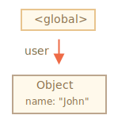
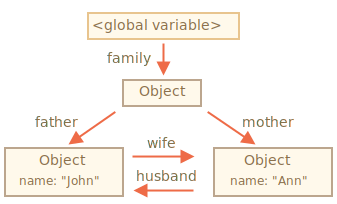
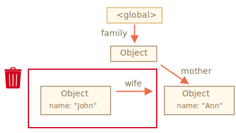
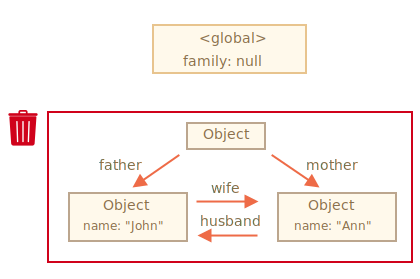

对于开发者来说，JavaScript 的内存管理是自动的、无形的。我们创建的原始值、对象、函数……这一切都会占用内存。
当我们不再需要某个东西时会发生什么？JavaScript 引擎如何发现它并清理它？
JavaScript 中主要的内存管理概念是 可达性。
简而言之，“可达”值是那些以某种方式可访问或可用的值。它们一定是存储在内存中的。
这里列出固有的可达值的基本集合，这些值明显不能被释放。
比方说：
当前函数的局部变量和参数。
嵌套调用时，当前调用链上所有函数的变量与参数。
全局变量。
（还有一些内部的）
这些值被称作 根（roots）。
如果一个值可以通过引用或引用链从根访问任何其他值，则认为该值是可达的。
比方说，如果全局变量中有一个对象，并且该对象有一个属性引用了另一个对象，则该对象被认为是可达的。而且它引用的内容也是可达的。下面是详细的例子。
在 JavaScript 引擎中有一个被称作 垃圾回收器 的东西在后台执行。它监控着所有对象的状态，并删除掉那些已经不可达的。
这里是一个最简单的例子：
// user 具有对这个对象的引用
let user = {
name: "John"
};
这里的箭头描述了一个对象引用。全局变量 "user" 引用了对象 {name："John"}（为简洁起见，我们称它为 John）。John 的 "name" 属性存储一个原始值，所以它被写在对象内部。
如果 user 的值被重写了，这个引用就没了：
user = null;现在 John 变成不可达的了。因为没有引用了，就不能访问到它了。垃圾回收器会认为它是垃圾数据并进行回收，然后释放内存。
现在让我们想象下，我们把 user 的引用复制给 admin：
// user 具有对这个对象的引用
let user = {
name: "John"
};
*!*
let admin = user;
*/!*现在如果执行刚刚的那个操作：
user = null;……然后对象仍然可以被通过 admin 这个全局变量访问到，所以对象还在内存中。如果我们又重写了 admin，对象就会被删除。
现在来看一个更复杂的例子。这是个家庭：
function marry(man, woman) {
woman.husband = man;
man.wife = woman;
return {
father: man,
mother: woman
}
}
let family = marry({
name: "John"
}, {
name: "Ann"
});marry 函数通过让两个对象相互引用使它们“结婚”了，并返回了一个包含这两个对象的新对象。
由此产生的内存结构：

到目前为止，所有对象都是可达的。
现在让我们移除两个引用：
delete family.father;
delete family.mother.husband;仅删除这两个引用中的一个是不够的，因为所有的对象仍然都是可达的。
但是，如果我们把这两个都删除，那么我们可以看到再也没有对 John 的引用了：

对外引用不重要，只有传入引用才可以使对象可达。所以，John 现在是不可达的，并且将被从内存中删除，同时 John 的所有数据也将变得不可达。
经过垃圾回收：
几个对象相互引用，但外部没有对其任意对象的引用，这些对象也可能是不可达的，并被从内存中删除。
源对象与上面相同。然后：
family = null;内存内部状态将变成：

这个例子展示了可达性概念的重要性。
显而易见，John 和 Ann 仍然连着，都有传入的引用。但是，这样还不够。
前面说的 "family" 对象已经不再与根相连，没有了外部对其的引用，所以它变成了一座“孤岛”，并且将被从内存中删除。
垃圾回收的基本算法被称为 "mark-and-sweep"。
定期执行以下“垃圾回收”步骤：
例如，使我们的对象有如下的结构：
我们可以清楚地看到右侧有一个“无法到达的岛屿”。现在我们来看看“标记和清除”垃圾收集器如何处理它。
第一步标记所有的根：
然后它们的引用被标记了：
……如果还有引用的话，继续标记：
现在，无法通过这个过程访问到的对象被认为是不可达的，并且会被删除。
我们还可以将这个过程想象成从根溢出一个巨大的油漆桶，它流经所有引用并标记所有可到达的对象。然后移除未标记的。
这是垃圾收集工作的概念。JavaScript 引擎做了许多优化，使垃圾回收运行速度更快，并且不影响正常代码运行。
一些优化建议：
还有其他垃圾回收算法的优化和风格。尽管我想在这里描述它们，但我必须打住了，因为不同的引擎会有不同的调整和技巧。而且，更重要的是，随着引擎的发展，情况会发生变化，所以在没有真实需求的时候，“提前”学习这些内容是不值得的。当然，除非这是一个纯粹的利益关系。我在下面给你提供了一些相关链接。
主要需要掌握的内容：
现代引擎实现了垃圾回收的高级算法。
《The Garbage Collection Handbook: The Art of Automatic Memory Management》（R. Jones 等人著）这本书涵盖了其中一些内容。
如果你熟悉底层（low-level）编程，关于 V8 引擎垃圾回收器的更详细信息请参阅文章 V8 之旅：垃圾回收。
V8 博客 还不时发布关于内存管理变化的文章。当然，为了学习垃圾收集，你最好通过学习 V8 引擎内部知识来进行准备，并阅读一个名为 Vyacheslav Egorov 的 V8 引擎工程师的博客。我之所以说 “V8”，因为网上关于它的文章最丰富的。对于其他引擎，许多方法是相似的，但在垃圾收集上许多方面有所不同。
当你需要底层的优化时，对引擎有深入了解将很有帮助。在熟悉了这门编程语言之后，把熟悉引擎作为下一步计划是明智之选。